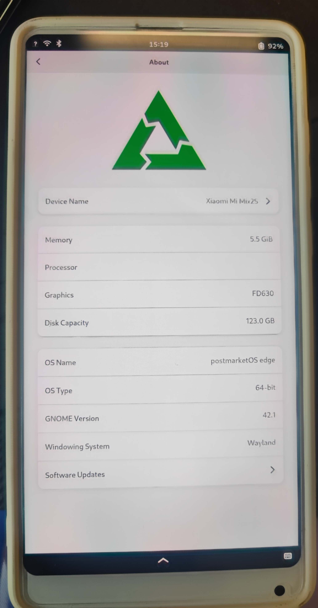

Xiaomi Mi Mix 2S (xiaomi-polaris)
Jump to navigation
Jump to search
|  | |
| Manufacturer | Xiaomi |
|---|---|
| Name | Mi Mix 2S |
| Codename | xiaomi-polaris |
| Released | 2018 |
| Category | testing |
| Original software | Android 8.0 |
| Hardware | |
| Chipset | Qualcomm Snapdragon 845 (SDM845) |
| CPU | Octa-core (4x2.8 GHz Kryo 385 Gold & 4x1.8 GHz Kryo 385 Silver) |
| GPU | Adreno 630 |
| Display | 1080 x 2160 IPS LCD |
| Storage | 64/128/256GB UFS2.1 |
| Memory | 6/8GB |
| Architecture | aarch64 |
{kind=link}
| USB Networking |
Works
|
|---|---|
| Flashing |
Works
|
| Touchscreen |
Partial
|
| Display |
Partial
|
| WiFi |
Partial
|
| FDE |
Works
|
| Mainline |
Works
|
| Battery |
Partial
|
| 3D Acceleration |
Works
|
| Audio |
Partial
|
| Bluetooth |
Works
|
| Camera |
Broken
|
| GPS | |
| Mobile data |
Works
|
| SMS |
Works
|
| Calls |
Partial
|
| USB OTG |
Broken
|
| NFC | |
| Accelerometer | |
|---|---|
| Magnetometer | |
| Ambient Light | |
| Proximity | |
| Hall Effect | |
| Barometer | |
| Power Sensor | |
| Camera Flash | |
|---|---|
| Keyboard | |
| Touchpad | |
| USB-A | |
| HDMI/DP | |
| Ir TX | |
| Ir RX | |
| Stylus | |
| Haptics | |
| Ethernet | |
| FOSS bootloader | |
Yet another phone based on Qualcomm Snapdragon 845 (SDM845).
How to enter flash mode
You have to press Power + Volume Down to enter the bootloader.
Installation
1. Run pmbootstrap init and select xiaomi as vendor and polaris as device.
2. Follow the onscreen instruction and configure as your needs.
Sample output:
[10:01:49] Location of the 'work' path. Multiple chroots (native, device arch, device rootfs) will be created in there. [10:01:49] Work path [/home/molly/.local/var/pmbootstrap]: [10:01:49] NOTE: pmaports path: /home/molly/.local/var/pmbootstrap/cache_git/pmaports [10:01:49] Choose the postmarketOS release channel. [10:01:49] Available (6): [10:01:49] * edge: Rolling release / Most devices / Occasional breakage: https://postmarketos.org/edge [10:01:49] * v22.06: Latest release / Recommended for best stability [10:01:49] * v21.12: Old release (unsupported) [10:01:49] * v21.06: Old release (unsupported) [10:01:49] * v21.03: Old release (unsupported) [10:01:49] * v20.05: Old release (unsupported) [10:01:49] Channel [edge]: [10:01:51] Choose your target device vendor (either an existing one, or a new one for porting). [10:01:51] Available vendors (70): acer, alcatel, amazon, apple, ark, arrow, asus, bq, cubietech, essential, fairphone, finepower, fly, goclever, google, gp, hisense, htc, huawei, infocus, jolla, klipad, kobo, lark, leeco, lenovo, lg, medion, meizu, microsoft, mobvoi, motorola, nextbit, nobby, nokia, nvidia, odroid, oneplus, oppo, ouya, pegatron, pine64, planet, purism, qemu, raspberry, samsung, semc, sharp, shift, sipeed, sony, sourceparts, surftab, t2m, tablet, teclast, tokio, tolino, trekstor, vernee, volla, wexler, wiko, wileyfox, xiaomi, xunlong, yu, zte, zuk [10:01:51] Vendor [qemu]: xiaomi [10:01:54] Available codenames (31): aries, armani, begonia, beryllium, cactus, cancro, cepheus, clover, daisy, dior, elish, equuleus, ferrari, gemini, ido, kenzo, laurel, lavender, libra, mido, natrium, platina, polaris, rolex, santoni, scorpio, tissot, vince, whyred, willow, wt88047 [10:01:54] Device codename: polaris [10:01:56] This device has proprietary components, which trade some of your freedom with making more peripherals work. [10:01:56] We would like to offer full functionality without hurting your freedom, but this is currently not possible for your device. [10:01:56] device-xiaomi-polaris-nonfree-firmware: Modem, WiFi and GPU Firmware, also needed for osk-sdl [10:01:56] Enable this package? (y/n) [y]:
$ pmbootstrap flasher flash_kernel $ pmbootstrap flasher flash_rootfs --partition userdata
For FDE:
$ pmbootstrap install --fde
The big list of issues
In no particular order...
Display does not work
- @JoshuaAshton · Feb 5, 2023 10:51am GMT+0100
Looking like the driver for the panel was reverted. The commit is no longer in 6.2-rc3 after the rebase.
- Workaround for display and touchscreen:
https://gitlab.com/postmarketOS/pmaports/-/issues/1894#note_1266158121
Network issues
According to my tests (@Daviteusz), it seems that WiFi works unstable and slow. I tested on a 150/30 fiber network
- 5GHz:
- Network crashes during apk update
- The connection speed is about 6Mbps
- According to speedtest, download pulls 50Mbps, but breaks connection during test
- 2.4GHz
- It works better, but sometimes there are similar problems
- Connection speed = 1Mbps
- According to speedtest download pulls max 20Mbps and test passes.
Battery charge reporting
- @JoshuaAshton · Feb 5, 2023 10:23am GMT+0100
Battery charge reporting is marked as working on the Wiki, yet /sys/class/power_supply/ is empty. I am guessing there is something much bigger wrong here, perhaps something with the devicetree...?
Community Info
Maintainers
- None
Old maintainers
- MollySophia
Users owning this device
- Illen (Notes: runs mainline)
- MollySophia
- Notsyncing
- Quandisti
- RiverZhou
See also
- GSMAREHA
- Kernel merge request
- pmaports!3327 Initial merge request
- Device package